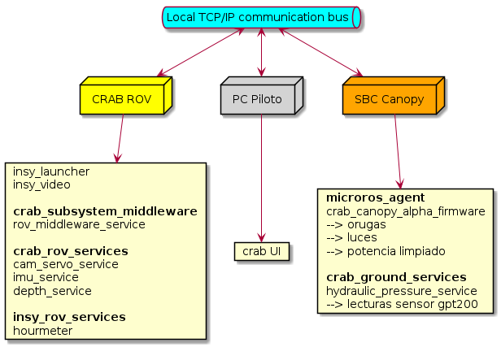
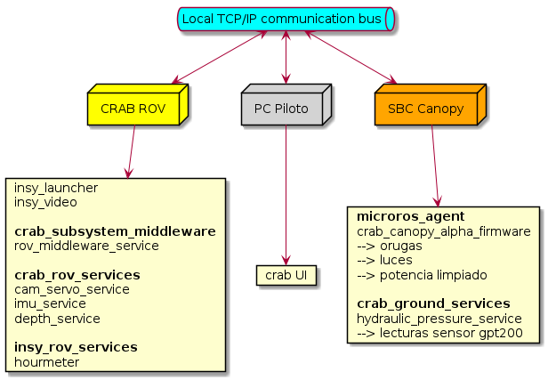

Created martes 29 agosto 2023
Se considera despliegue de software en 3 lugares:
Arquitectura de red
CrabRov=192.168.2.2
CanopySBC=192.168.2.3
CasetaPC=192.168.2.4
Arquitectura de software

Created martes 29 agosto 2023
Se considera despliegue de software en 3 lugares:
CrabRov=192.168.2.2
CanopySBC=192.168.2.3
CasetaPC=192.168.2.4

Created martes 29 agosto 2023
Despliegue usando Orange Pi 3 LTS:
Usuarios por defecto: root Password: orangepi.
La carga de imagen a la eMMC se resume a usar una SD en el slot de la placa y correr el comando nand-sata-install.
Pasos relevantes a seguir:
Configurar ip estática 192.168.2.3 con sudo nano /etc/network/interfaces
Agregar al final del archivo:
auto eth0 iface eth0 inet static address 192.168.2.3 netmask 255.255.255.0
Configurar grupos para el usuario insytech:
sudo usermod -a -G dialout $USER sudo usermod -a -G tty $USER sudo usermod -a -G i2c $USER
Seguimos la guía de digitalocean (basta con los pasos 1 y 2).
Se puede probar que todo está andando bien con el commando:
docker run hello-world
La placa orange pi debe levantar dos módulos de software:
Utilizando docker el agente microROS se instala en un solo comando:
docker pull microros/micro-ros-agent:humble
Para el software hidraulic_pressure_service se deben seguir las instrucciones del repositorio crab_ground_services.
Para producción todo el software debe iniciarse de forma automática. Se deja una copia del script lanzador que se debe copiar en ~/bin/insy_launcher.sh.
Es recomendable reemplazar el valor de /dev/ttyACM0 por un puerto físico en caso de utilizarse más de un MCU con microROS en la placa orange pi.
#!/bin/bash
_ifconfig=/usr/sbin/ifconfig
insy_bin=/home/insytech/bin
canopy_alpha_com_port=/dev/ttyACM0
launch_programs() {
echo "Launching Insy Software..."
screen -S microros-agent -dm bash -c "docker run -it --rm --device=$canopy_alpha_com_port --net=host microros/micro-ros-agent:humble serial --dev $canopy_alpha_com_port baudrate=115200; exec sh"
screen -S hydraulic-pressure-service -dm bash -c "$insy_bin/hydraulic_pressure_service; exec sh"
}
# Waiting for dockerd to start
while ! docker info > /dev/null 2>&1; do
echo "Waiting for dockerd to start..."
sleep 1
done
echo "Dockerd started"
# Waiting for eth0 network interface
while ! $_ifconfig eth0 | grep "inet 192.168.2.3" > /dev/null; do
echo "Interface eth0 not running"
sleep 1
done
launch_programs
Registrar el lanzador usando crontab -e.
@reboot screen -S insy-launcher -dm bash -c ". /home/insytech/bin/insy_launcher.sh; exec sh"
Created miércoles 06 septiembre 2023
Se considera una máquina Intel® NUC Kit NUC7CJYHN.
Formatear una instalación limpia con Linux Mint Mate 21.2 con los siguiente parámetros:
Luego de instalar y arrancar la máquina:
Con esto se puede acceder a la máquina desde la red local por ssh.
Asignar ip estática con
sudo apt install ifupdown -y sudo nano /etc/network/interfaces
Agregar:
auto eno1 iface eno1 inet static address 192.168.2.4 netmask 255.255.255.0
Reiniciar y verificar ip estática en eth0/eno1.
Actualizar sistema,
sudo apt update && sudo apt upgrade
Instalar ROS2 Humble (guía oficial),
sudo -v sudo apt install software-properties-common sudo add-apt-repository universe sudo apt update && sudo apt install curl -y sudo curl -sSL https://raw.githubusercontent.com/ros/rosdistro/master/ros.key -o /usr/share/keyrings/ros-archive-keyring.gpg echo "deb [arch=$(dpkg --print-architecture) signed-by=/usr/share/keyrings/ros-archive-keyring.gpg] http://packages.ros.org/ros2/ubuntu $(. /etc/os-release && echo $UBUNTU_CODENAME) main" | sudo tee /etc/apt/sources.list.d/ros2.list > /dev/null sudo apt update sudo apt install ros-humble-ros-base -y
Instalar paquete insy_msgs para ROS2,
sudo -v # Load ros2 environment . /opt/ros/humble/local_setup.sh sudo apt install git python3-colcon-common-extensions build-essential -y cd ~ && mkdir -p ros_ws && cd ros_ws git clone http://gitlab.telemcloud.cl/aquarovdevelopment/insy_msgs.git colcon build
Instalar CRABUI según las indicaciones del repositorio http://gitlab.telemcloud.cl/aquarovdevelopment/crabui.
Dado que el programa CRABUI requiere de un ambiente ROS2 para su ejecución, generaremos un script para un lanzam iento más fácil. Crear el siguiente archivo en ~/bin/crabui y dar permisos de ejecución con chmod +x:
#!/bin/bash source /opt/ros/humble/local_setup.sh source /home/insytech/ros_ws/install/local_setup.sh /home/insytech/crabui/venv/bin/crabui
Para producción es necesario el despliegue automático de CRABUI. Para esto es necesario entrar en la interfaz gráfica del PC en la aplicación startup applications.
Crear un lanzador de nombre crabui que ejecute /home/insytech/bin/crabui
Created jueves 07 septiembre 2023
Instrucciones de despliegue para la Jetson Nano que corre sobre el ROV están en su propio apartado en el repositorio:
http://gitlab.telemcloud.cl/aquarovdevelopment/insy_deployment_notes
{kind=link}